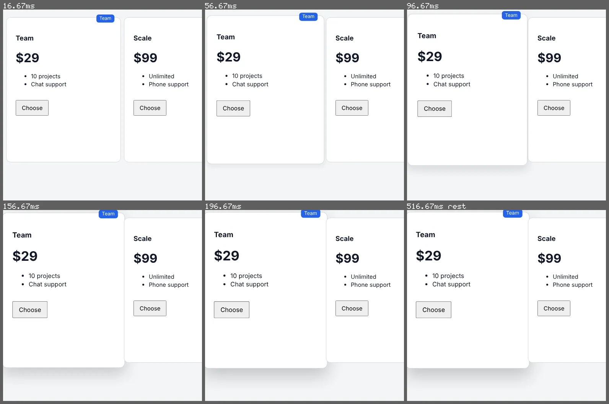

inspect motion --hover
A hovered card that lifts under its neighbour
Three pricing cards 8px apart. The hovered one grows to 108% about its centre over 200ms, and a lifted card should be on top of everything.
Open the page under test · fixtures/motion-authoring/v2/mutants/lift-noz.html
Run it
vlmkit inspect motion fixtures/motion-authoring/v2/mutants/lift-noz.html --hover .plan:nth-child(2) --selector .plan:nth-child(2) --frames {out}/f
vlmkit snapshot strip --manifest {out}/f/frames.json --max-frames 6 --columns 3 --crop 380,100,520,500 --out {out}/strip.png
What to look at
The 5x5 hit-test that says how much of a target is seen never reaches its edge, so points 2px inside the edge are probed too. A quarter of them hit the next card: each card is position: relative for its tag, so they paint in document order and the later one wins.
The fix
Give the hovered card z-index: 1, and hold it until the card has settled back (transition: z-index 0s 200ms on the card itself).
What vlmkit printed
vlmkit inspect motion fixtures/motion-authoring/v2/mutants/lift-noz.html --hover .plan:nth-child(2) --selector .plan:nth-child(2) --frames {out}/f · exit 1 — the command fails, as a gate in CI would
inspect motion: fixtures/motion-authoring/v2/mutants/lift-noz.html — 11 frames over 17..217ms + 1 at rest (<out>/f/frames.json)
target ".plan:nth-child(2)", begins at 17ms, runs 200ms: travels 0px over the frames measured, follows ease-out in its scale exactly (measured: no other curve comes close); follows ease-out in its shadow (it fits 515.6x better than the next-best curve, ease); the scale grows from its centre (its scale goes from 1.00 to 1.08)
frames (time, share of its on-screen part seen [op = opacity, on-screen = share of its box in the viewport, when partial], centre): 17ms 1.00 (538,310), 37ms 1.00 (538,310), 57ms 1.00 (538,310), 77ms 1.00 (538,310), 97ms 1.00 (538,310), 117ms 1.00 (538,310), 137ms 1.00 (538,310), 157ms 1.00 (538,310), 177ms 1.00 (538,310), 197ms 1.00 (538,310), 216ms 1.00 (538,310), 517ms 1.00 (538,310)
FAIL covered-edge at 137ms: raised (scale 1.06) and covered at its edge at 137ms: 25% of the points along its edge are covered by div.plan, which comes later in the document and paints over it — give it a z-index (with position: relative, or as a grid / flex item) while it is raised
1 fail; measured from the page, no model asked (--jev adds Jev's reading and the --forbid statements)
look at the frames: vlmkit snapshot strip --manifest <out>/f/frames.json --max-frames 6 --columns 3 --crop 0,2,1225,616 --out <out>/f/strip.png
the first fail's own frame (137ms, .plan:nth-child(2) covered-edge): <out>/f/0006-t000137.png
report: <out>/f/motion-report.json
vlmkit snapshot strip --manifest {out}/f/frames.json --max-frames 6 --columns 3 --crop 380,100,520,500 --out {out}/strip.png · exit 0
Strip Frames: 6 (2 row(s) x 3 column(s)) Sheet: 1592x1058 png <out>/strip.png